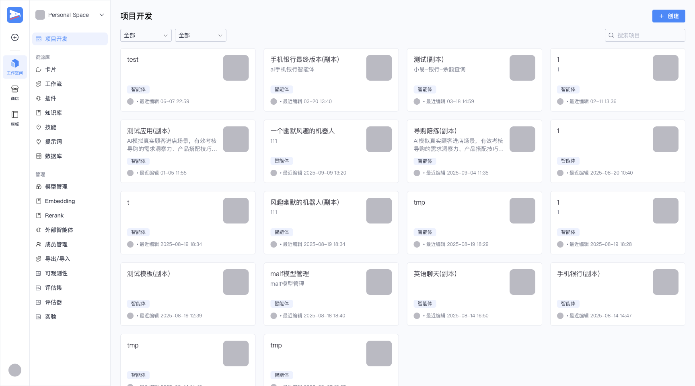
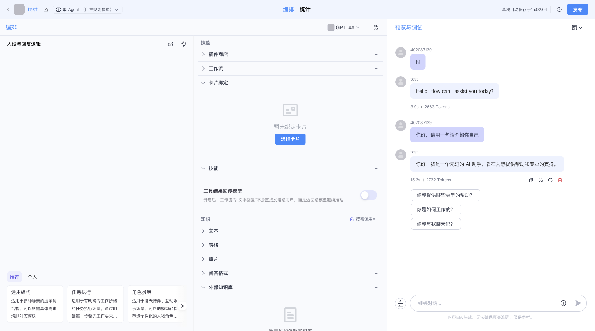
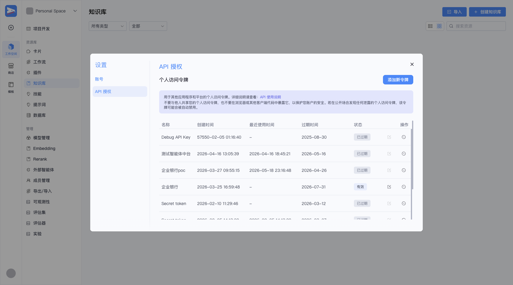
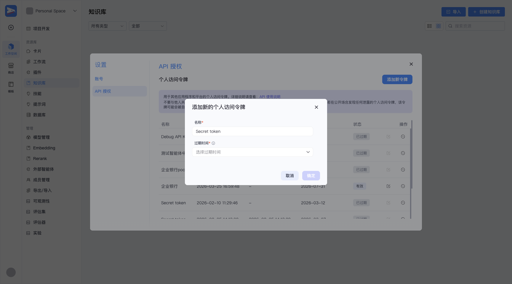
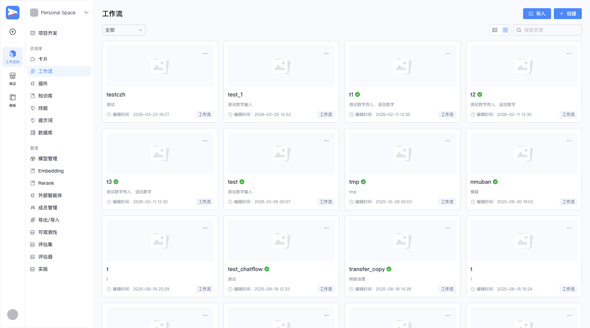
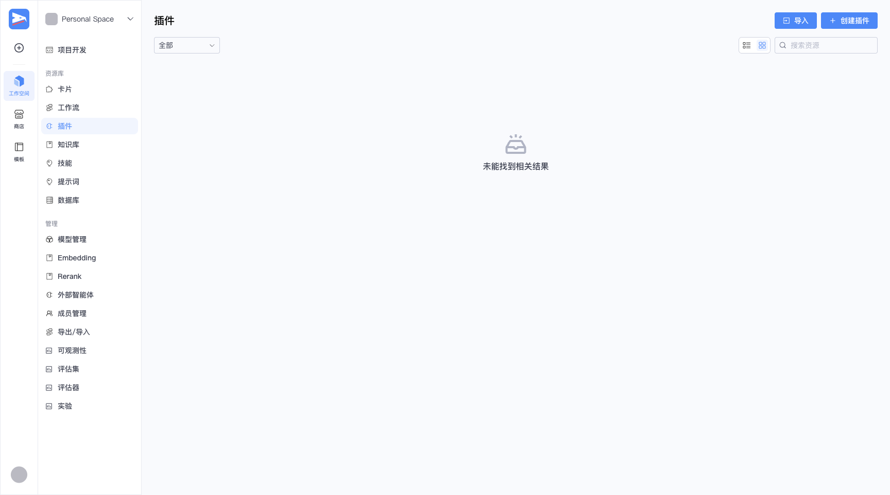
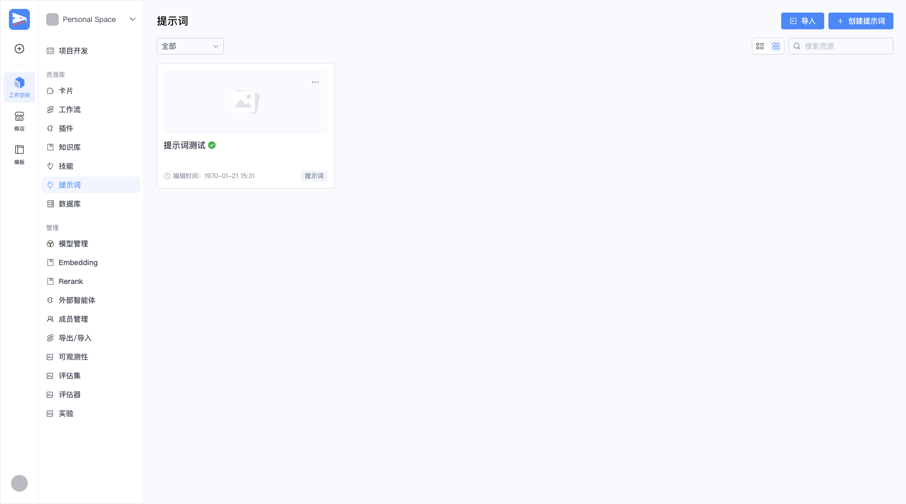
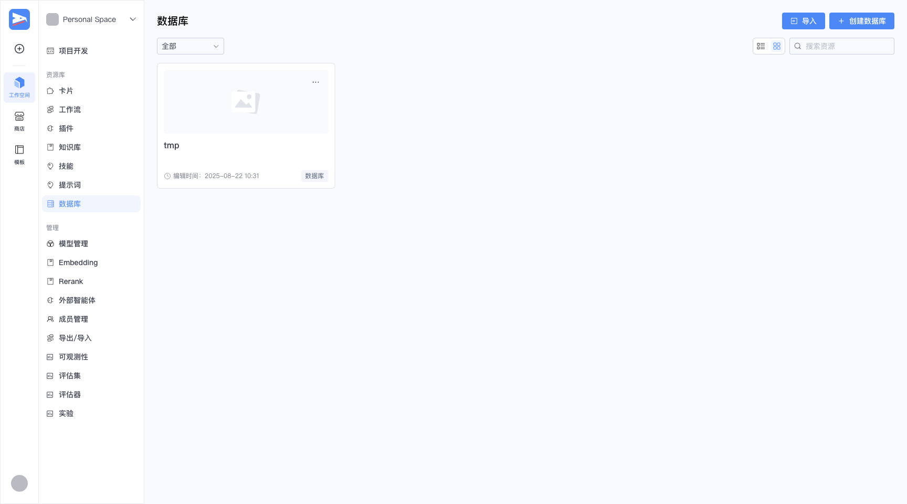

猎鹰 Studio
对外开放 API 能做什么
在 Studio 里搭好智能体/工作流并发布后，业务系统用 PAT 令牌通过 API 调用——对话、跑工作流、传文件。本手册「集成教程」讲对外集成 5 步；「API 接口」覆盖全平台 21 个模块 179 个接口（对外 + 平台管理）。
Authorization: Bearer <PAT>；平台管理 API（知识库/插件/数据库等）走前端登录态 session_key cookie。详见「API 接口 › 认证与约定」。创建并发布智能体
先在 Studio 里搭一个智能体并发布——只有已发布的智能体才能被对外 API 调用。
① 在「项目开发」创建/打开智能体
左侧「项目开发」进入智能体列表，新建或打开一个智能体。

② 编排、调试、发布
在编排页配置人设/技能/知识，右侧「预览与调试」可即时对话。确认无误后点右上角【发布】。注意浏览器地址栏 URL：/space/.../bot/<bot_id>/arrange，其中的 bot_id 就是调用 /v3/chat 要用的智能体 ID。

创建 PAT 访问令牌
业务系统用 PAT 作为 API Key 调用。在个人设置里创建，密钥要妥善保存。
① 进入「API 授权」
点左下角用户头像 → 菜单选「API 授权」，进入个人访问令牌管理页。

② 添加新令牌
点【添加新令牌】，填名称、选过期时间，确定后生成令牌。

调用 /v3/chat 对话
拿到 bot_id + PAT，业务系统即可与智能体对话。默认 SSE 流式返回。
① 发起对话
curl -N -X POST "http://<BASE_URL>/v3/chat?conversation_id=" \
-H "Authorization: Bearer <PAT>" -H "Content-Type: application/json" \
-d '{"bot_id":"7620395637741191168","user_id":"biz_user_001","stream":true,"additional_messages":[{"role":"user","content":"你好","content_type":"text"}]}'② 处理 SSE 事件流
event: conversation.message.delta
data: {"role":"assistant","content":"你","content_type":"text",...}
event: conversation.message.completed
data: {...完整回复...}
event: conversation.chat.completed
data: {...usage:{token_count,input_count,output_count}}
event: conversation.stream.done运行工作流
工作流(Workflow)适合固定流程/编排任务。发布后用 workflow_id 调用。
① 拿 workflow_id
「资源库 → 工作流」里打开一个工作流，URL 里即其 ID。

② 同步运行
curl -X POST "http://<BASE_URL>/v1/workflow/run" \
-H "Authorization: Bearer <PAT>" -H "Content-Type: application/json" \
-d '{"workflow_id":"7400000000000000000","parameters":"{\"input\":\"hello\"}"}'文件上传与会话管理
对话里要带图片/文件，先上传拿到 URI；多轮会话用会话接口管理。
① 上传文件
两种方式：/api/bot/upload_file（base64）或 /v1/files/upload（原始二进制）。返回文件 URL/URI，可在对话 content 里引用。
curl -X POST "http://<BASE_URL>/v1/files/upload" \ -H "Authorization: Bearer <PAT>" -H "Content-Type: image/png" \ --data-binary "@logo.png"
② 会话管理
/v1/conversation/create 建会话、/v1/conversations 列会话、/v1/conversation/message/list 列消息、/v1/conversations/:id/clear 清空上下文。详见「API 接口」。
认证与约定
猎鹰 Studio 共 179 个接口（本手册收录），分两套认证。
| 类别 | 认证 | 说明 |
|---|---|---|
| 对外 API（/v1,/v3） | Authorization: Bearer <PAT> | 业务系统集成，PAT 在「个人设置→API授权」创建 |
| 平台管理 API（/api/*） | Cookie session_key | 前端管理后台（知识库/插件/数据库等），登录后携带 |
Studio-全量API.postman_collection.json 含全部 179 个接口（两套 auth 分组），导入即可逐个测试。对外 ▸ 对话与会话
接口清单
| 方法 | 路径 | 用途 |
|---|---|---|
| POST | /v3/chat | 与智能体对话 (SSE) |
| POST | /v1/conversation/create | 创建会话 |
| GET | /v1/conversations | 列出会话 |
| POST | /v1/conversation/message/list | 列出会话消息 |
| POST | /v1/conversations/{{conversation_id}}/clear | 清空会话上下文 |
| GET | /v1/bot/get_online_info | 查智能体线上信息 |
请求体示例
POST 与智能体对话 (SSE)
与已发布智能体对话(OpenAI/YNET v3,SSE)。bot_id在body,conversation_id在query。
{
"bot_id": "{{bot_id}}",
"user_id": "{{user_id}}",
"stream": true,
"additional_messages": [
{
"role": "user",
"content": "你好",
"content_type": "text"
}
]
}POST 创建会话
请求 bot_id/connector_id/meta_data。响应 data.id 会话ID。
{
"bot_id": "{{bot_id}}"
}POST 列出会话消息
请求 conversation_id/limit/order/before_id/after_id。
{
"conversation_id": "{{conversation_id}}",
"limit": 20,
"order": "desc"
}对外 ▸ 工作流
接口清单
| 方法 | 路径 | 用途 |
|---|---|---|
| POST | /v1/workflow/run | 运行工作流(同步) |
| POST | /v1/workflow/stream_run | 流式运行工作流(SSE) |
| POST | /v1/workflow/stream_resume | 工作流中断恢复(SSE) |
| GET | /v1/workflow/get_run_history | 工作流执行历史 |
| POST | /v1/workflows/chat | 与对话流对话(SSE) |
| POST | /v1/workflow/conversation/create | 为对话流创建会话 |
请求体示例
POST 运行工作流(同步)
parameters 为入参JSON字符串。响应 data(结果)/token/cost/execute_id。
{
"workflow_id": "{{workflow_id}}",
"parameters": "{\"input\":\"hi\"}"
}POST 流式运行工作流(SSE)
SSE: event message/done/error, 含 node_title/content/interrupt_data。
{
"workflow_id": "{{workflow_id}}",
"parameters": "{\"input\":\"hi\"}"
}POST 工作流中断恢复(SSE)
interrupt_type: 1本地插件/2提问/3要素/5输入/7OAuth。
{
"workflow_id": "{{workflow_id}}",
"event_id": "e1",
"interrupt_type": 2,
"resume_data": "补充",
"ext": {}
}对外 ▸ 文件
接口清单
| 方法 | 路径 | 用途 |
|---|---|---|
| POST | /api/bot/upload_file | 上传文件(base64) |
| POST | /v1/files/upload | 上传文件(原始二进制) |
| POST | /api/playground/upload/auth_token | 取OSS直传凭证 |
| POST | /api/common/upload/apply_upload_action | 申请上传地址(VOD) |
请求体示例
POST 上传文件(base64)
biz_type: 1BOT_ICON/2BOT_DATASET/4PLUGIN_ICON...。响应 upload_url/upload_uri。
{
"file_head": {
"file_type": "png",
"biz_type": 1
},
"data": "<base64>"
}POST 取OSS直传凭证
响应 auth{access_key_id,secret_access_key,session_token}。
{
"scene": "bot"
}管理 ▸ 对话(前端)
接口清单
| 方法 | 路径 | 用途 |
|---|---|---|
| POST | /api/conversation/chat | Agent运行(SSE主聊天) |
| POST | /api/conversation/get_message_list | 拉取消息列表 |
| POST | /api/conversation/clear_message | 清空会话历史 |
| POST | /api/conversation/create_section | 新建 section |
| POST | /api/conversation/delete_message | 删除消息 |
| POST | /api/conversation/break_message | 打断回复 |
请求体示例
POST Agent运行(SSE主聊天)
AgentRunRequest。SSE RunStreamResponse。
{
"bot_id": "{{bot_id}}",
"conversation_id": "{{conversation_id}}",
"query": "你好",
"scene": 10
}POST 拉取消息列表
游标分页。
{
"conversation_id": "{{conversation_id}}",
"cursor": "0",
"count": 20
}POST 清空会话历史
建新 section。
{
"conversation_id": "{{conversation_id}}"
}管理 ▸ 工作流编排
接口清单
| 方法 | 路径 | 用途 |
|---|---|---|
| POST | /api/workflow_api/create | 创建工作流 |
| POST | /api/workflow_api/save | 保存草稿canvas |
| POST | /api/workflow_api/publish | 发布工作流 |
| POST | /api/workflow_api/copy | 复制工作流 |
| POST | /api/workflow_api/delete | 删除工作流 |
| POST | /api/workflow_api/canvas | 获取canvas |
| POST | /api/workflow_api/test_run | 试运行(编辑器调试) |
| POST | /api/workflow_api/test_resume | 试运行恢复 |
| POST | /api/workflow_api/nodeDebug | 单节点调试 |
| GET | /api/workflow_api/get_process | 获取运行进度 |
| POST | /api/workflow_api/workflow_list | 工作流列表 |
| POST | /api/workflow_api/workflow_detail | 工作流详情 |
| POST | /api/workflow_api/workflow_detail_info | 工作流详情(含schema) |
| POST | /api/workflow_api/list_publish_workflow | 已发布工作流列表 |
| POST | /api/workflow_api/update_meta | 更新元信息 |
| POST | /api/workflow_api/validate_tree | 校验流程树 |
| POST | /api/workflow_api/node_template_list | 节点模板列表 |
| POST | /api/workflow_api/export | 导出工作流 |
| POST | /api/workflow_api/import | 导入工作流 |
| POST | /api/workflow_api/version_list | 版本历史列表 |
| POST | /api/workflow_api/revert_draft | 回滚草稿到版本 |
| POST | /api/workflow_api/chat_flow_role/create | 创建chatflow角色 |
| POST | /api/workflow_api/project_conversation/create | 创建项目会话定义 |
请求体示例
POST 创建工作流
{
"space_id": "{{space_id}}",
"name": "我的工作流"
}POST 保存草稿canvas
{
"workflow_id": "{{workflow_id}}"
}POST 发布工作流
{
"workflow_id": "{{workflow_id}}"
}管理 ▸ 知识库
接口清单
| 方法 | 路径 | 用途 |
|---|---|---|
| POST | /api/knowledge/create | 创建知识库 |
| POST | /api/knowledge/list | 知识库列表 |
| POST | /api/knowledge/detail | 知识库详情(批量) |
| POST | /api/knowledge/update | 更新知识库 |
| POST | /api/knowledge/delete | 删除知识库 |
| POST | /api/knowledge/document/create | 创建文档 |
| POST | /api/knowledge/document/list | 文档列表 |
| POST | /api/knowledge/document/update | 更新文档 |
| POST | /api/knowledge/document/delete | 删除文档 |
| POST | /api/knowledge/document/resegment | 重新分段 |
| POST | /api/knowledge/document/progress/get | 文档处理进度 |
| POST | /api/knowledge/slice/create | 新增切片 |
| POST | /api/knowledge/slice/list | 切片列表 |
| POST | /api/knowledge/slice/update | 更新切片 |
| POST | /api/knowledge/slice/delete | 删除切片 |
| POST | /api/knowledge/retrieve_test | 召回测试 |
| POST | /api/knowledge/table_schema/get | 取表格schema |
| POST | /api/knowledge/photo/list | 图片列表 |
请求体示例
POST 创建知识库
format_type: 0文本/1表格/2图片/7QA。
{
"name": "我的知识库",
"description": "desc",
"space_id": "{{space_id}}",
"icon_uri": "",
"format_type": 0
}POST 知识库列表
{
"space_id": "{{space_id}}",
"page": 1,
"size": 20
}POST 知识库详情(批量)
{
"dataset_ids": [
"{{dataset_id}}"
],
"space_id": "{{space_id}}"
}管理 ▸ 外部知识库
接口清单
| 方法 | 路径 | 用途 |
|---|---|---|
| POST | /api/external-knowledge/retrieval | 外部知识库检索 |
| POST | /api/external-knowledge/binding/create | 创建绑定 |
| GET | /api/external-knowledge/binding/list | 绑定列表 |
| GET | /api/external-knowledge/ragflow/datasets | RAGFlow数据集列表 |
请求体示例
POST 外部知识库检索
{
"query": "问题"
}管理 ▸ 插件
接口清单
| 方法 | 路径 | 用途 |
|---|---|---|
| POST | /api/plugin_api/register_plugin_meta | 创建插件元信息 |
| POST | /api/plugin_api/register | 从manifest+openapi注册 |
| POST | /api/plugin_api/convert_to_openapi | curl/postman/swagger转openapi |
| POST | /api/plugin_api/update_plugin_meta | 更新插件元信息 |
| POST | /api/plugin_api/del_plugin | 删除插件 |
| POST | /api/plugin_api/get_plugin_info | 插件详情 |
| POST | /api/plugin_api/get_dev_plugin_list | 开发态插件列表 |
| POST | /api/plugin_api/publish_plugin | 发布插件 |
| POST | /api/plugin_api/create_api | 创建工具(API) |
| POST | /api/plugin_api/update_api | 更新工具 |
| POST | /api/plugin_api/delete_api | 删除工具 |
| POST | /api/plugin_api/get_plugin_apis | 工具列表 |
| POST | /api/plugin_api/debug_api | 调试工具 |
| POST | /api/plugin_api/get_oauth_status | 取OAuth状态 |
| POST | /api/plugin_api/library_resource_list | 资源库列表 |
| POST | /api/plugin_api/create_folder | 创建文件夹 |
| POST | /api/plugin_api/get_folder_list | 文件夹列表 |
| POST | /api/plugin_api/move_resources_to_folder | 移动资源到文件夹 |
请求体示例
POST 创建插件元信息
{
"name": "我的插件",
"desc": "desc",
"space_id": "{{space_id}}",
"icon": {},
"auth_type": 0
}POST 从manifest+openapi注册
{
"ai_plugin": "<manifest JSON>",
"openapi": "<openapi YAML>",
"space_id": "{{space_id}}"
}POST curl/postman/swagger转openapi
{
"data": "<curl/swagger>",
"space_id": "{{space_id}}"
}管理 ▸ 技能
接口清单
| 方法 | 路径 | 用途 |
|---|---|---|
| POST | /api/skill/create | 创建技能 |
| GET | /api/skill/get | 技能详情 |
| POST | /api/skill/update | 更新技能 |
| POST | /api/skill/delete | 删除技能 |
| GET | /api/skill/list | 技能列表 |
请求体示例
POST 创建技能
{
"space_id": "{{space_id}}",
"name": "技能名"
}POST 更新技能
{
"skill_id": "sk1"
}POST 删除技能
{
"skill_id": "sk1"
}管理 ▸ 数据库
接口清单
| 方法 | 路径 | 用途 |
|---|---|---|
| POST | /api/memory/database/add | 创建数据库表 |
| POST | /api/memory/database/list | 数据库列表 |
| POST | /api/memory/database/get_by_id | 按ID取数据库 |
| POST | /api/memory/database/update | 更新数据库 |
| POST | /api/memory/database/delete | 删除数据库 |
| POST | /api/memory/database/list_records | 查询数据行 |
| POST | /api/memory/database/update_records | 增/改/删数据行 |
| POST | /api/memory/database/bind_to_bot | 绑定到Bot |
| POST | /api/memory/database/table/list_new | Bot库表列表 |
| POST | /api/memory/table_file/submit | 提交数据导入任务 |
| POST | /api/memory/table_schema/get | 取表schema |
请求体示例
POST 创建数据库表
type: 1Text/2Number/3Date/4Float/5Boolean。rw_mode:1受限/2只读/3无限。
{
"creator_id": "{{user_id}}",
"space_id": "{{space_id}}",
"project_id": "p1",
"icon_uri": "",
"table_name": "用户表",
"table_desc": "desc",
"field_list": [
{
"name": "name",
"desc": "姓名",
"type": 1,
"must_required": true
}
],
"rw_mode": 1,
"prompt_disabled": false
}POST 数据库列表
table_type:1草稿/2线上。
{
"space_id": "{{space_id}}",
"table_type": 1,
"offset": 0,
"limit": 20
}POST 按ID取数据库
{
"id": "db1",
"is_draft": true,
"need_sys_fields": true
}管理 ▸ 变量与记忆
接口清单
| 方法 | 路径 | 用途 |
|---|---|---|
| GET | /api/memory/sys_variable_conf | 系统变量配置 |
| GET | /api/memory/project/variable/meta_list | 项目变量元列表 |
| POST | /api/memory/variable/get | 取KV记忆 |
| POST | /api/memory/variable/upsert | 写入KV记忆 |
| POST | /api/memory/variable/delete | 删除profile记忆 |
| POST | /api/memory-config/set | 设置记忆配置 |
请求体示例
POST 取KV记忆
{
"bot_id": "{{bot_id}}"
}POST 写入KV记忆
{
"bot_id": "{{bot_id}}"
}POST 删除profile记忆
{
"bot_id": "{{bot_id}}"
}管理 ▸ 智能体/Bot编排
接口清单
| 方法 | 路径 | 用途 |
|---|---|---|
| POST | /api/draftbot/create | 创建草稿Bot |
| POST | /api/draftbot/delete | 删除草稿Bot |
| POST | /api/draftbot/duplicate | 复制草稿Bot |
| POST | /api/draftbot/publish | 发布Bot |
| POST | /api/draftbot/commit_check | 提交前检查 |
| POST | /api/draftbot/list_draft_history | 草稿历史列表 |
| POST | /api/draftbot/publish/connector/list | 发布渠道列表 |
| POST | /api/playground_api/draftbot/get_draft_bot_info | 取草稿Bot详情 |
| POST | /api/playground_api/draftbot/update_draft_bot_info | 更新草稿Bot详情 |
请求体示例
POST 创建草稿Bot
{
"space_id": "{{space_id}}",
"name": "我的智能体"
}POST 删除草稿Bot
{
"bot_id": "{{bot_id}}"
}POST 复制草稿Bot
{
"bot_id": "{{bot_id}}"
}管理 ▸ HiAgent接入
接口清单
| 方法 | 路径 | 用途 |
|---|---|---|
| GET | /api/space/{{space_id}}/hi-agents | HiAgent列表 |
| POST | /api/space/{{space_id}}/hi-agents | 创建HiAgent |
| GET | /api/space/{{space_id}}/hi-agents/:agent_id | HiAgent详情 |
| PUT | /api/space/{{space_id}}/hi-agents/:agent_id | 更新HiAgent |
| DELETE | /api/space/{{space_id}}/hi-agents/:agent_id | 删除HiAgent |
| POST | /api/hi-agents/test-connection | 测试HiAgent连接 |
请求体示例
POST 创建HiAgent
{
"name": "外部智能体",
"endpoint": "https://..."
}POST 测试HiAgent连接
{
"endpoint": "https://..."
}管理 ▸ 项目/应用
接口清单
| 方法 | 路径 | 用途 |
|---|---|---|
| POST | /api/intelligence_api/draft_project/create | 创建项目(应用) |
| POST | /api/intelligence_api/draft_project/copy | 复制项目 |
| POST | /api/intelligence_api/draft_project/update | 更新项目 |
| POST | /api/intelligence_api/draft_project/delete | 删除项目 |
| POST | /api/intelligence_api/publish/publish_project | 发布项目 |
| POST | /api/intelligence_api/search/get_draft_intelligence_list | 草稿智能体列表 |
| POST | /api/intelligence_api/search/get_recently_edit_intelligence | 最近编辑列表 |
请求体示例
POST 创建项目(应用)
{
"space_id": "{{space_id}}",
"name": "我的应用"
}POST 复制项目
{
"project_id": "p1"
}POST 更新项目
{
"project_id": "p1"
}管理 ▸ 空间
接口清单
| 方法 | 路径 | 用途 |
|---|---|---|
| POST | /api/space/create | 创建空间 |
| GET | /api/space/list | 空间列表 |
| GET | /api/space/:space_id | 空间详情 |
| PUT | /api/space/:space_id | 更新空间 |
| DELETE | /api/space/:space_id | 删除空间 |
| GET | /api/space/:space_id/members | 成员列表 |
| POST | /api/space/:space_id/members | 邀请成员 |
| POST | /api/space/:space_id/export | 导出空间 |
| POST | /api/space/:space_id/import/preview | 导入预览 |
| POST | /api/space/:space_id/release | 创建发布 |
| GET | /api/space/:space_id/release/list | 发布列表 |
| POST | /api/space/configure_models | 一键配置空间模型 |
| POST | /api/space/diagnose | 空间健康检查 |
请求体示例
POST 创建空间
{
"name": "我的空间"
}POST 邀请成员
{
"user_id": "u1",
"role": "member"
}POST 一键配置空间模型
{
"space_id": "{{space_id}}"
}管理 ▸ 模型
接口清单
| 方法 | 路径 | 用途 |
|---|---|---|
| POST | /api/model/create | 创建模型 |
| POST | /api/model/list | 模型列表 |
| POST | /api/model/detail | 模型详情 |
| POST | /api/model/update | 更新模型 |
| POST | /api/model/delete | 删除模型 |
| POST | /api/model/import | 从模板导入模型 |
| GET | /api/model/templates | 模型模板列表 |
| POST | /api/model/space/add | 加模型到空间 |
| POST | /api/embedding/space/list | 空间向量模型列表 |
| POST | /api/rerank/space/list | 空间rerank模型列表 |
| GET | /api/admin/models | 公共模型列表 |
| POST | /api/admin/models/create | 创建公共模型 |
请求体示例
POST 创建模型
{
"space_id": "{{space_id}}"
}POST 模型列表
{
"space_id": "{{space_id}}"
}POST 模型详情
{
"model_id": "m1"
}管理 ▸ 提示词与杂项
接口清单
| 方法 | 路径 | 用途 |
|---|---|---|
| POST | /api/playground_api/upsert_prompt_resource | 新增/更新提示词 |
| GET | /api/playground_api/get_prompt_resource_info | 提示词详情 |
| POST | /api/playground_api/get_official_prompt_list | 官方提示词列表 |
| POST | /api/playground_api/create_update_shortcut_command | 新增/更新快捷指令 |
| POST | /api/playground_api/space/list | 空间列表V2 |
请求体示例
POST 新增/更新提示词
{
"space_id": "{{space_id}}"
}管理 ▸ 模板与商店
接口清单
| 方法 | 路径 | 用途 |
|---|---|---|
| POST | /api/template/publish | 发布为模板 |
| GET | /api/template/my-list | 我的模板列表 |
| DELETE | /api/template/:template_id | 删除模板 |
| POST | /api/template/store/publish | 发布到商店 |
| GET | /api/template/store/list | 商店模板列表 |
| GET | /api/marketplace/product/list | 商店产品列表 |
| POST | /api/marketplace/product/duplicate | 复制商店产品 |
管理 ▸ 统计与日志
接口清单
| 方法 | 路径 | 用途 |
|---|---|---|
| POST | /api/statistics/app/active-users | 活跃用户统计 |
| POST | /api/statistics/app/messages | 消息量统计 |
| POST | /api/statistics/app/tokens | Token统计 |
| POST | /api/statistics/app/list_app_conversation_log | 会话日志列表 |
| POST | /api/operation_log/list | 操作日志列表 |
请求体示例
POST 活跃用户统计
{
"space_id": "{{space_id}}"
}POST 消息量统计
{
"space_id": "{{space_id}}"
}POST Token统计
{
"space_id": "{{space_id}}"
}管理 ▸ 用户与PAT
接口清单
| 方法 | 路径 | 用途 |
|---|---|---|
| POST | /api/passport/account/info/v2/ | 账户信息 |
| POST | /api/user/update_profile | 更新资料 |
| POST | /api/permission_api/pat/create_personal_access_token_and_permission | 创建PAT(API Key) |
| GET | /api/permission_api/pat/list_personal_access_tokens | 列出PAT |
| POST | /api/permission_api/pat/delete_personal_access_token_and_permission | 删除PAT |
请求体示例
POST 创建PAT(API Key)
创建对外用的 PAT 令牌(就是 api_key)。
{
"name": "my-token",
"expire_at": 0
}POST 删除PAT
{
"id": "t1"
}登录(公开)
接口清单
| 方法 | 路径 | 用途 |
|---|---|---|
| POST | /api/passport/web/email/login/ | 邮箱登录 |
| POST | /api/passport/web/email/register/v2/ | 邮箱注册 |
| GET | /api/passport/web/logout/ | 登出 |
请求体示例
POST 邮箱登录
登录拿 session_key cookie。
{
"email": "user@test.com",
"password": "<password>"
}POST 邮箱注册
{
"email": "user@test.com",
"password": "<password>"
}管理后台功能速览


